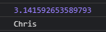
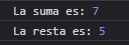
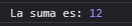
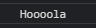

Modules
1) Exportar e importar constantes
Exportar en el archivo constantes.js:
/* PI y usuario son declarados como exports que serán llamados con import en el archivo módulo, por cada variable */
export const PI = Math.PI;
export let usuario = 'Chris';
Importando desde el archivo modules.js:
console.log('--------- 1 ---------');
import { PI, usuario } from "./constantes.js";
console.log(PI);
console.log(usuario);

2) Exportar e importar funciones
Exportar en el archivo aritmetica.js:
/* Funciones Aritméticas */
export function sumar(a, b) {
return a + b;
}
export function restar(a, b) {
return a - b;
}
Importando desde el archivo modules.js:
/* Importar funciones */
console.log('--------- 2 ---------');
import { sumar, restar } from "./aritmetica.js";
console.log('La suma es:', sumar(3, 4));
console.log('La resta es:', restar(10, 5));

3) Llamar como fue creado el objeto
Exportar en el archivo aritmeticaV2.js:
/* Dos funciones declaradas que serán exportados a nivel general */
function sumar(a, b) {
return a + b;
}
function restar(a, b) {
return a - b;
}
export const operaciones = {
sumar,
restar,
}
Importando desde el archivo modules.js:
/* Llamar como fue creado el objeto */
console.log('--------- 3 ---------');
import { operaciones } from "./aritmeticaV2.js";
console.log('La suma es:', operaciones.sumar(4, 8));

4) Llamado de la clase saludar
Exportar en el archivo hi.js:
/* Exportar la función */
export class Saludar {
constructor() {
console.log("Hoooola");
}
}
Importando desde el archivo modules.js:
/* Llamado de la clase saludar */
console.log('--------- 4 ---------');
import { Saludar } from "./hi.js";
let saludo = new Saludar();
saludo;

5) Darle un alias
/* Darle un alias (Saludar ahora se llama sal) */
console.log('--------- 5 ---------');
import {Saludar as sal } from "./hi.js";
let saludoV2 = new sal();
saludoV2;